ENGRAVED METAMORPHOSIS · 線刻の変身画
赤富士が、鏡の中で
真珠の耳飾りの少女になる
板の上面に細い溝を彫り、墨を入れただけの立体です。手前から見ると葛飾北斎「凱風快晴」、後ろに立てた鏡の中ではフェルメール「真珠の耳飾りの少女」が、線刻の版画として浮かび上がります。塗りは地色と墨だけで、見る向きによる塗り分けはありません。絵が入れ替わるのは、溝の立体的な形のためです。
家庭用の 3D プリンター（Bambu Lab P1S）の標準の 0.4 mm ノズルで刷れるように設計しています。作り方の違う 2 つの版があります。上面がほぼ平らな平らな版（110 × 150 × 5 mm）と、上面が波打つ凸凹版（110 × 150 × 17.5 mm）です。どちらも長辺 15 cm で、サポートなしで刷れます。造形データはページの下からダウンロードできます。
おまけ：同じ手法の 2 枚組「星月夜 ⇄ 雷神」「ローヌ川の星月夜 ⇄ 風神」をページの最後に追加しました。鏡の中に、俵屋宗達の風神雷神図屏風が現れます。
平らな版と凸凹版
同じ絵・同じ大きさを、2 つの作り方で設計しました。凸凹版は、絵の暗い所ほど溝を詰めて明暗を出すので、上面が数 mm 波打ちます。実際に作ってみると、この凸凹が目立ちました。平らな版は、溝を等間隔に並べ、溝と溝の間の面の見かけの幅だけで明暗を描きます。上面の起伏は ±0.25 mm で、ほとんど平らな板です。
このページの画像と動画は、2 つの版を同じ照明・同じカメラで描き、凸凹版 と 平らな版 を並べています。どちらも 0.4 mm ノズル用・墨あり・やわらかい光です。
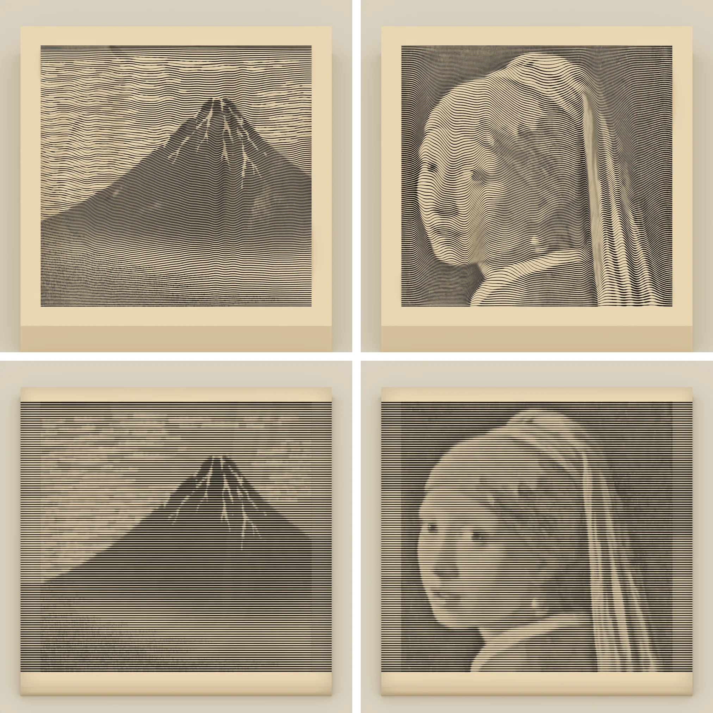
一周させて見る
俯角 45° のカメラで作品の周りを一周する動画（12 秒・60 fps）。0° で赤富士、180° の真後ろで少女（左右反転）が現れる。
手前から見ると、鏡の中では
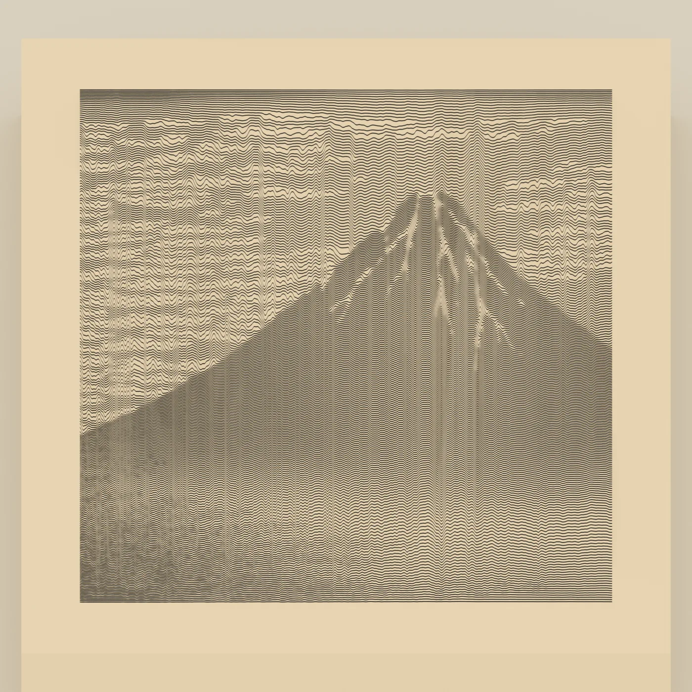
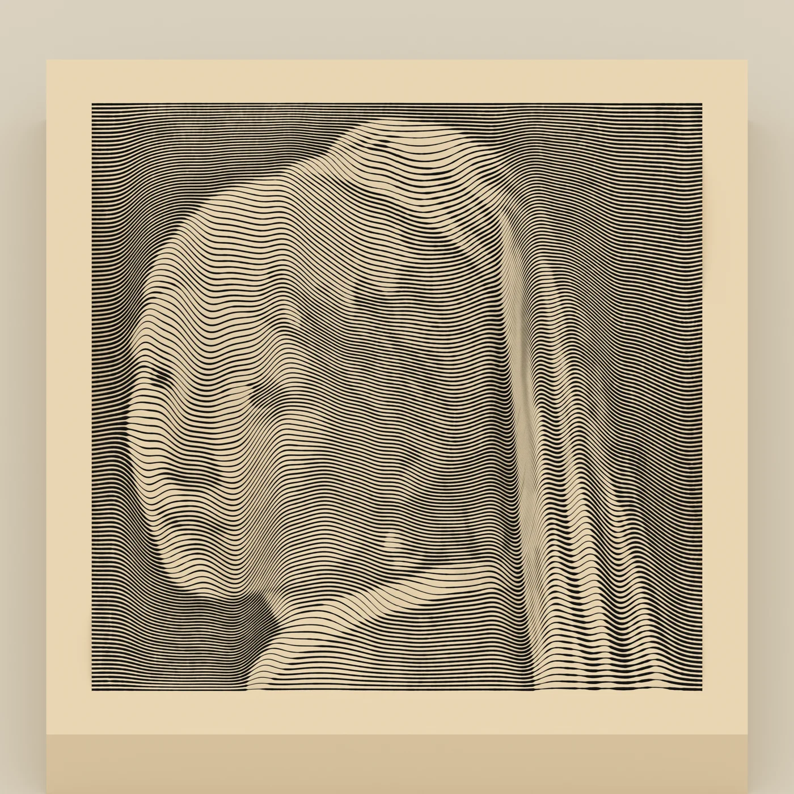


同じ立体を鏡に映すと、フェルメールの少女が現れる。0.4 mm ノズル用では線が粗く、凸凹版では目・鼻・口がうっすらと見える程度。平らな版の方が、目や口がはっきり出る。
鏡を立てて展示すると
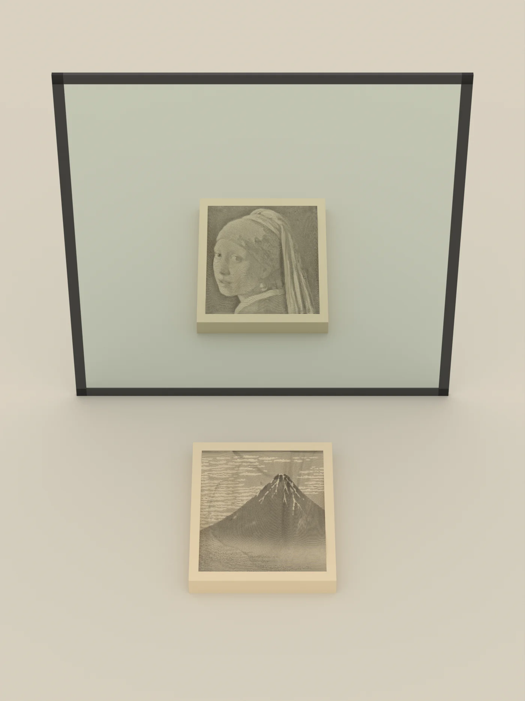

作品の奥に鏡を置き、上端を約 3° 手前へ倒します。手前の実物には赤富士、鏡に映った像には少女が見えます。鏡は、反対側からの視点を同時に見せる役目をします。
平らな絵を鏡に映すと、上下逆さに見えるはずです。この作品では、溝の立体的な形（凸凹版では上面の起伏 −6.9〜+5.5 mm、平らな版では面の縁のわずかな高さの違い）がその反転を打ち消し、少女が正立して見えます。裏へ回って直接見ると、少女は正立のまま左右だけ反転しています（上の切り替えボタン）。
15° ごとの見え方
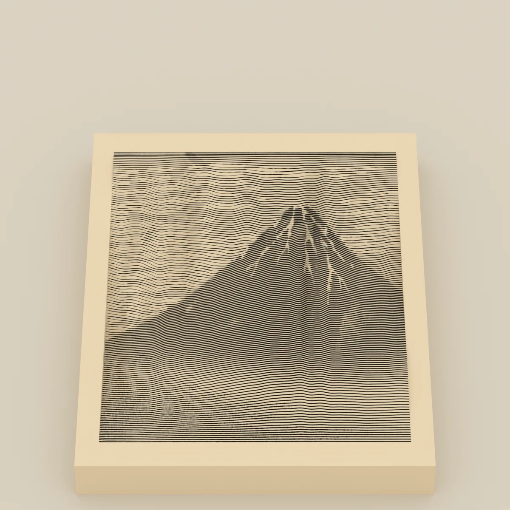

方位 0°
下の小さな画像は、上が凸凹版、下が平らな版。
仕組み
1 枚の像には奥行きの情報がない（杉原厚吉「変身立体」）。面上の点を手前と奥から同じ俯角 e で見ると、左右位置 x は共通です（鏡は奥行きだけを反転します）。違うのは上下位置で、手前からは vA、鏡の中では vB になります。溝 1 本ごとに 2 つの絵での位置を別々に決めれば、溝の空間曲線は次の式で一意に決まります。
平らな版：明暗は、溝の間の面の見かけの幅だけで表す。溝は 71 本を等間隔に並べます。溝と溝の間の面の手前の縁と奥の縁の高さを少しずらすと、手前から見た面の幅と、鏡から見た面の幅を別々に決められます。面が広く見えるほど明るく見えます。片方の絵での幅の違いは、もう片方の絵には映りません。面の見かけの幅は、手前・鏡それぞれ線の間隔の 18〜82 % の範囲で決め、面のわずかな傾きによる陰影も 2 つの絵の明るさを連立で解いて打ち消しています。
凸凹版：明暗は、線の粗密と溝の幅で表す。
- 粗密：絵の暗い所ほど溝が詰まるように、各列で線の密度の累積分布を 84 等分して溝を置きます。下から i 本目の溝は、赤富士の中では下から i 番目、少女の中では上から i 番目の位置です。並び順が 2 つの絵で逆なので、溝の間の面の傾きは密度の比で抑えられます。
- 溝の幅：溝の手前の縁と奥の縁にも、それぞれ上の式を当てます。2 つの縁の高さを少し（最大 0.55 mm）変えると、手前から見た溝の幅と、鏡から見た溝の幅を別々に決められます。暗い所ほど溝を太く見せて、目・鼻・口や雪の筋のような細部を出します。片方の絵の幅の違いは、もう片方の絵には映りません。
凸凹版では、溝の位置（起伏）は左右になだらかに保ち、細部は溝の幅が受け持ちます。面の傾きは最大 0.75（約 37°）で、45° より緩いので、どちらの視点からも面が面自身を隠しません。見る人は上面を平らだと思い込むので、溝は平らな板に彫られた版画として読まれます。
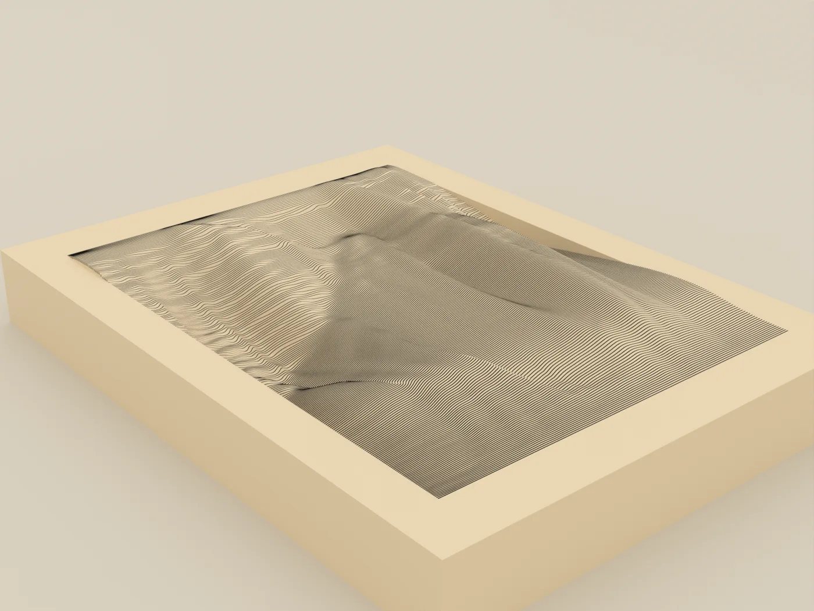

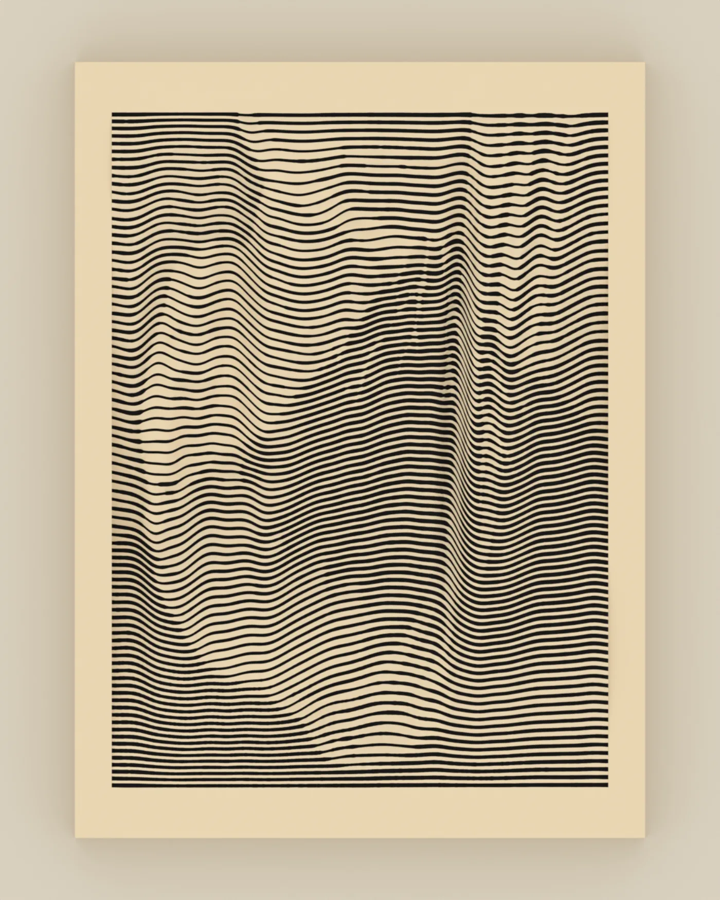

3D プリンター向けの最適化
家庭用の熱溶解プリンター Bambu Lab P1S（造形エリア 256 × 256 × 256 mm）で刷ることを前提に、形を実寸で設計しています。
- 大きさ：どちらの版も 110 × 150 mm（長辺 15 cm）で、造形エリアに余裕をもって収まります。絵の部分は、手前からも鏡の中でも 96 mm 角の正方形に見えます。0.4 mm ノズルでは線が粗いので、少女の目や口は、凸凹版より平らな版の方がはっきり出ます。
- ノズル：P1S 標準の 0.4 mm ノズル用です。溝の最小幅と、溝の間の壁（面）の最小幅は、どちらも 0.50 mm です。壁は Arachne で 1 本の線として出せる幅です。
- 平らな版：厚さ 5 mm の板で、溝があるのは上面の 1 mm ほどだけです。緩い斜面がないので積層の筋が出にくく、造形時間は凸凹版の半分以下（約 1 時間 40 分）です。
- 凸凹版：濃淡の多くを溝の幅が受け持つので、線の粗密の差を小さくでき、起伏は −6.9〜+5.5 mm に収まります。
- サポート不要：どちらの版も、上面はどの点も真上から見える形で、オーバーハングはありません。彫った面を上にして平らに置くだけです。
- 墨入れ：凸凹版は、墨を入れる前の形だけの状態でも陰影で絵が読めます。平らな版は、墨を入れて初めて絵がはっきり出ます。
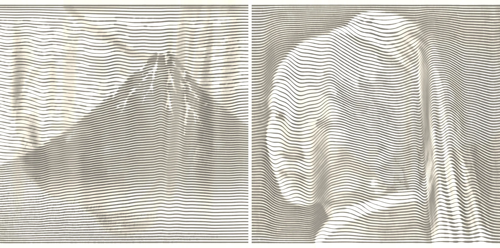
どのくらいの角度・距離まで見えるか
設計は「俯角 45°・真正面・平行投影」ですが、角度が少しずれても絵は保たれます。溝の並び順が変わらないので、絵は急に消えず、少しずつ変形するだけだからです。凸凹版は低い角度（俯角 30°）で崩れ始め、平らな版は高い角度（俯角 52° 以上）でもう一方の絵が透けてきます。平らな版は、俯角 45° かそれより少し低い位置から見るのがいちばんきれいです。
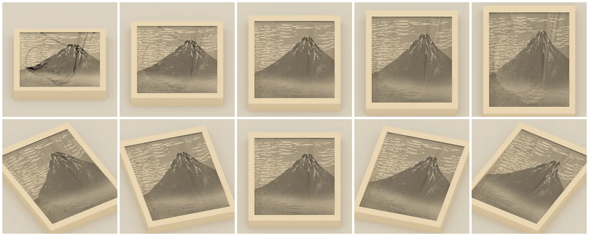

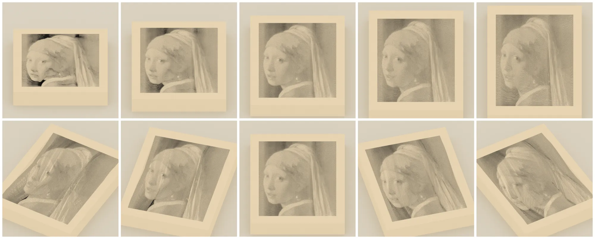

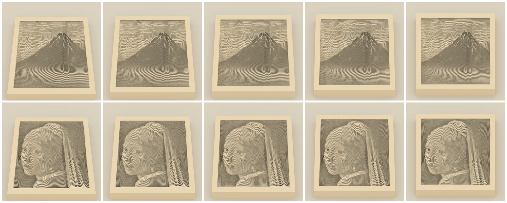
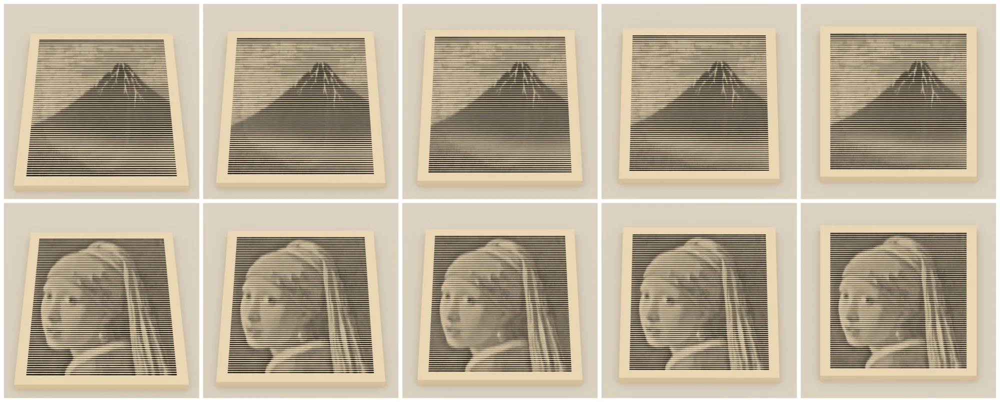
| 条件 | 凸凹版 | 平らな版 |
|---|---|---|
| 俯角 38〜45° | どちらの絵もはっきり読める | どちらの絵もはっきり読める |
| 俯角 52〜60° | 読める（少し縦に伸び縮みする） | 読めるが、もう一方の絵の輪郭が透けてくる（52° でうっすら、60° ではっきり） |
| 俯角 30° | 崩れ始める（面が溝を隠して黒い筋が出る。とくに赤富士） | 読める |
| 左右 ±15° | 読める（絵が傾き、少し歪む） | |
| 左右 ±30° | 読めるが、大きく歪む | |
| 距離 0.5 m 以上 | 問題なし（線が溶け合って明暗に見えるのは、およそ 1〜1.5 m から） | |
照明と墨入れ
絵は、溝に入れた墨の黒と、表面の地色の対比でいちばんはっきり出ます（下の③）。
- 墨なし（①②）：凸凹版は、溝の幅と起伏の陰影で、うっすらと絵が読めます。平らな版は、溝の間の面の幅だけで明暗を描くので、墨を入れないとほとんど見えません。平らな版は墨入れが欠かせません。
- 斜めからの強い光（④）：凸凹版は、面の高さが 2 つの絵での線の位置の和で決まるので、一方の絵に縦の輪郭（富士の稜線や顔の輪郭）があると、その所で面が左右に傾きます。横からの強い光では、この傾きの陰影がもう一方の絵に透けて見えます。平らな版は面がほぼ平らなので、強い光でも透けは目立ちません。
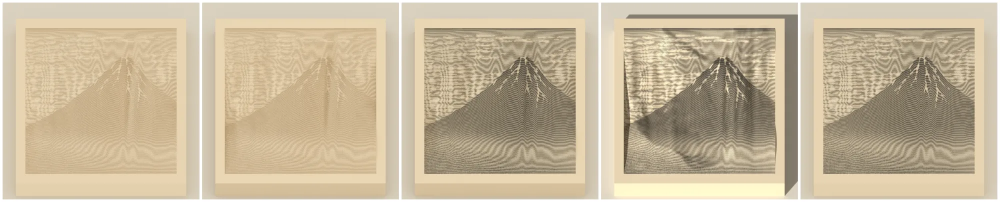
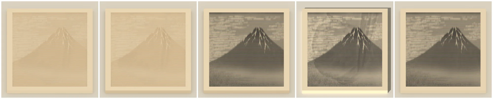
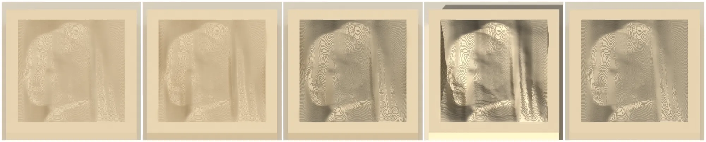
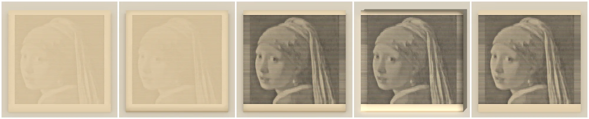
見せるときは、溝に墨を入れ、上から、やわらかく、手前と奥に均等に光を当ててください（大きなディフューザー付きのライト、曇りの日の窓辺など）。スポットライトや横からの強い光は避けます。このページの画像は、特に断りのないものは③の条件（墨あり・やわらかい光、陰影を抑える処理なし）で描いています。
寸法
このページの画像は、0.4 mm ノズル用の 2 つの版を実寸で描いたものです。平らな版は 110 × 150 × 5.3 mm（溝 71 本・等間隔・深さ 1.0 mm）、凸凹版は 110 × 150 × 17.5 mm（溝 84 本・幅 0.50〜1.06 mm・深さ 1.0 mm）です。絵の部分は、どちらの版もどちらから見ても 96 mm 角の正方形に見えます。
3D プリンター用のデータと設定（Bambu Lab P1S）
どちらの版も実寸で設計しています。スライサーで拡大・縮小しないでください。溝の幅がノズルに合わなくなり、錯視も崩れます。どちらも P1S 標準の0.4 mm ノズル用です。
材料を白のマット PLAにすると、墨の線との対比が大きくなります。
| 平らな版 | 凸凹版 | |
|---|---|---|
| 大きさ | 110 × 150 × 5.3 mm | 110 × 150 × 17.5 mm |
| 溝 | 71 本・等間隔・深さ 1.0 mm | 84 本・幅 0.50〜1.06・深さ 1.0 mm |
| 最も細い溝 / 溝の間の壁 | 0.50 mm / 0.50 mm | |
| 上面の起伏 | ±0.25 mm | −6.9 〜 +5.5 mm |
| 工程・積層ピッチ | 0.12mm Fine @BBL X1C・0.12 mm | |
| 壁生成 | Arachne（P1S 用のプリセットの既定は Classic なので切り替える） | |
| インフィル | 15 % | |
| 造形時間・材料の目安 | 約 1 時間 40 分・52 g | 約 3 時間 45 分・79 g |
| サポート・ブリム | サポート不要・外側ブリム 3 mm（薄板の反りを抑える） | どちらも不要 |
| 材料 | 白のマット PLA（木地色・ベージュも可） | |
- 置き方：彫った面を上にして平らに置きます。
- 墨入れ：造形後、溝に黒のアクリル絵の具（または墨）を流し込み、乾く前に固く絞った布で表面を拭き取ります。溝の中だけが黒く残ります。
- 2 色刷りは勧めません：AMS で溝だけ黒く刷ろうとしても、溝の間の面は押し出し 1 本ぶんの幅しかないため、実際の G-code では面の中身がほぼ黒で刷られ、地色は一番上の 1 層だけになります。単色で刷って墨入れしてください。
- 凸凹版の積層の筋：緩い斜面には、積層の段差が等高線のような筋になって出ます。可変積層ピッチで上面付近を細かくすると目立ちにくくなります。
- スライスでの確認：Bambu Studio の P1S 用の公式プリセットで実際にスライスし、G-code の押し出し経路を設計の断面と重ねて確かめました。平らな版は、溝の間の面の欠けも、ふさがった溝もありませんでした。凸凹版は、溝は埋まらず、刷られないのは傾いた壁の頂上で断面が細くなる所（積層の段差）の一部だけです。
- Bambu Studio 用プロジェクト：下の 3MF を開くと、P1S・0.4 mm ノズル・工程・フィラメントと Arachne の設定が入った状態になります。「スライス」を押せばそのまま刷れます。
- 確認してほしいこと：実物はまだ刷っていません。初めての場合は、絵の一部を 30 mm 角ほど切り出して試し刷りすると安全です。
BONUS · おまけ
2 枚組「星月夜 ⇄ 雷神」「ローヌ川の星月夜 ⇄ 風神」
同じ変身立体の原理で作った 2 枚組です。左に置く 1 枚は手前から見るとゴッホ「星月夜」、右に置く 1 枚は「ローヌ川の星月夜」。2 枚を並べて奥に鏡を立てると、鏡の中には俵屋宗達「風神雷神図屏風」の雷神（左）と風神（右）が、元の屏風と同じ並びで現れます。鏡は奥行きだけを反転するので、左右は入れ替わりません。
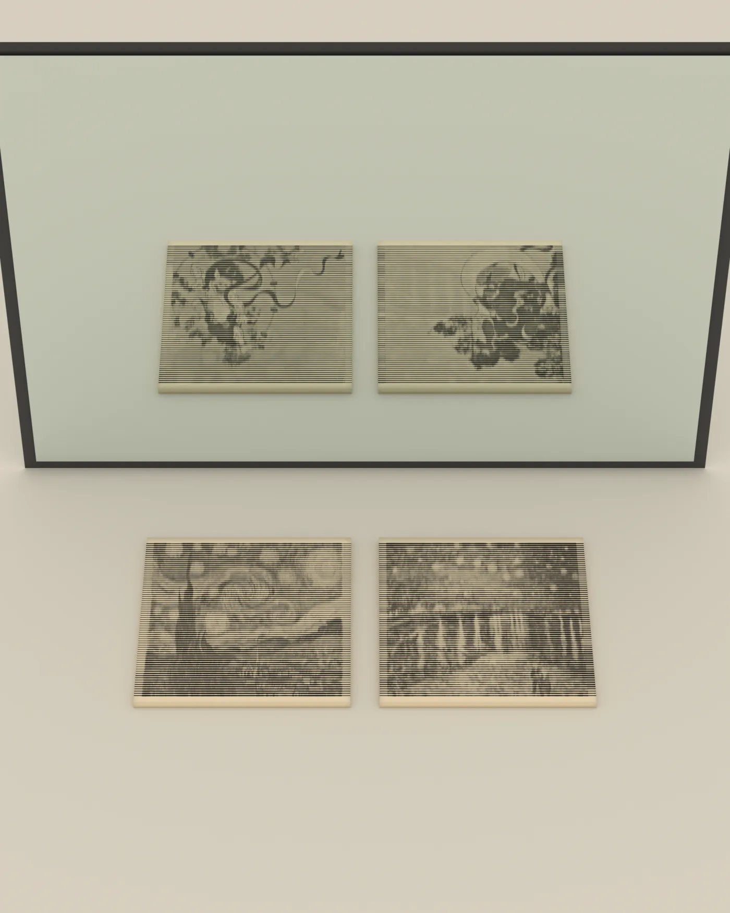
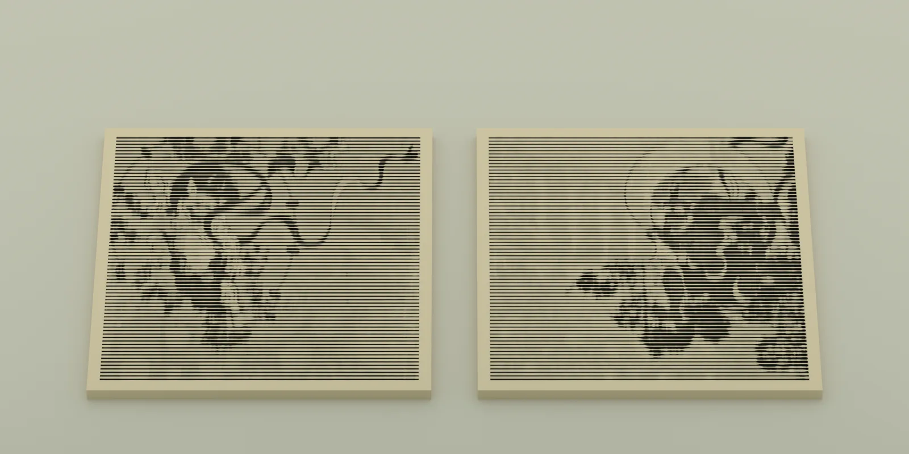
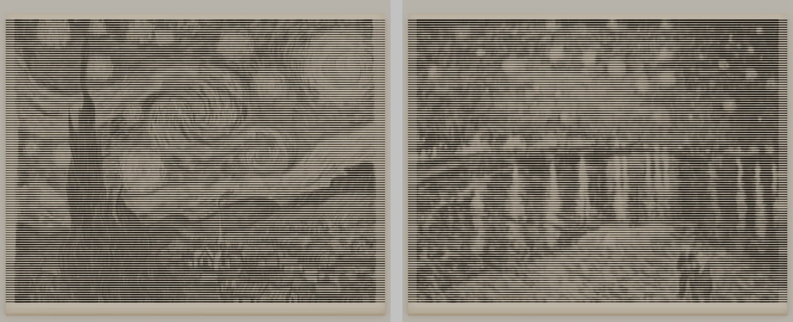
赤富士の凸凹版と違い、溝は等間隔で、上面の起伏はほぼありません（±0.3 mm）。赤富士の平らな版と同じ作り方です。明暗は、溝と溝の間の面の「見かけの幅」だけで描きます。面の手前の縁と奥の縁の高さを少し変えると、手前での見かけの幅と鏡での見かけの幅を別々に決められるので、片方の絵はもう一方にほとんど透けません。色と筆のタッチで描かれた星月夜の渦や星も、この方式で出せるようになりました。溝の間の面の見かけの幅は、手前・鏡それぞれ線の間隔の 18〜82 % の範囲で決めています。最初に公開した版（26〜74 %）より、明暗の差がはっきり出ます。1 枚の大きさは 135.7 × 150 mm（長辺 15 cm）、厚さ 5 mm の薄い板で、刷る時間は 1 枚約 2 時間半（0.4 mm ノズル・単色）です。溝の幅と溝の間の面の幅はノズルに合わせてあるので、15 cm にしたぶん溝の本数が減り、線は最初の版（長辺 24 cm）より粗くなっています。
| 0.4 mm ノズル用（P1S 標準） | |
|---|---|
| 大きさ（1 枚） | 135.7 × 150.0 × 5.2〜5.3 mm |
| 絵の部分（見かけ） | 126 × 99 mm |
| 溝 | 73 本・等間隔・深さ 1.0 mm |
| 最も細い溝 / 溝の間の面 | 0.50 mm / 0.50 mm |
| 工程・積層ピッチ | 0.12mm Fine・0.12 mm |
| 造形時間・材料の目安（1 枚） | 約 2 時間 15 分〜2 時間半・66 g |
| 設定 | Arachne・インフィル 15 %・サポートなし・外側ブリム 3 mm・明るい色のマット PLA |
- 実寸で設計しています。スライサーで拡大・縮小しないでください。
- 置き方：彫った面を上にして平らに置きます（Bambu Studio 用のプロジェクトでは台の中央に置いてあります）。
- 単色で刷って墨入れします。赤富士の版と同じく、造形後に溝に墨を入れます。
- 2 色刷りは勧めません：プロジェクト 3MF を開くと溝が黒・地がベージュに塗られて見えますが、溝の間の面は押し出し 1 本ぶんの幅しかないため、実際の G-code では面の中身がほぼ黒で刷られ、地色は一番上の 1 層だけになります（G-code を色ごとに調べた結果）。表示より暗く、にごって見えるおそれがあります。
- Bambu Studio で鏡の中の像を見るには：視点を板の奥側に回し、斜め 45° ほど上から見下ろします。雷神・風神が見えます（鏡を通さず奥から直接見るので、左右は反転しています）。
- 確認してほしいこと：Bambu Studio でスライスして警告が出ないこと、G-code 上で溝がふさがらないことは確かめましたが、実物はまだ刷っていません。